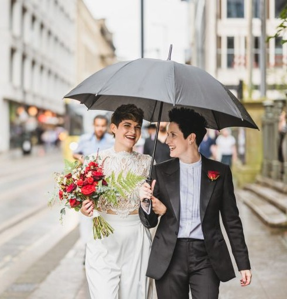
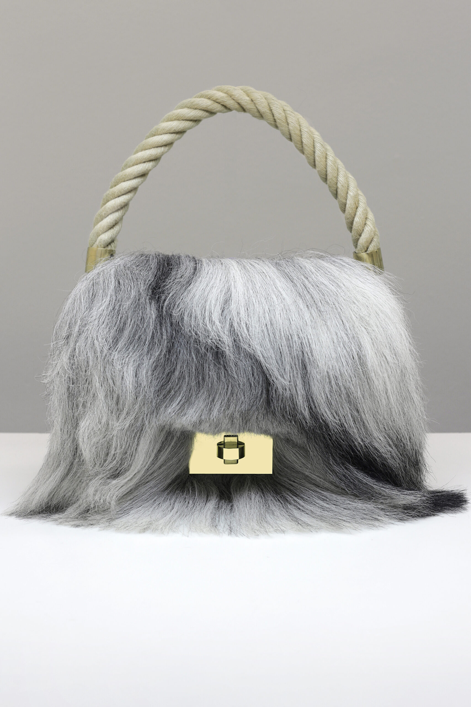
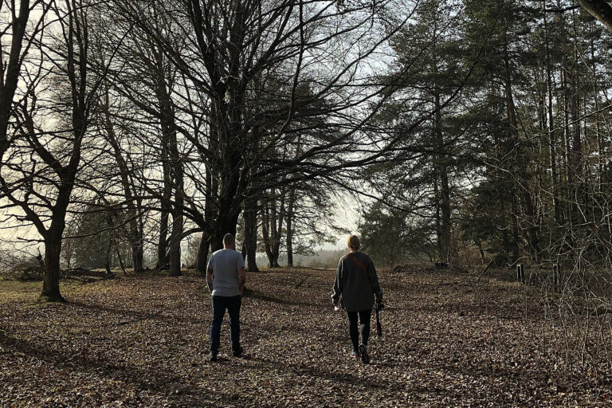
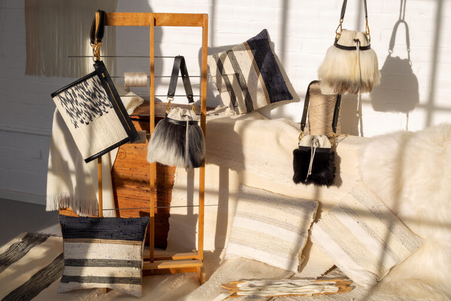
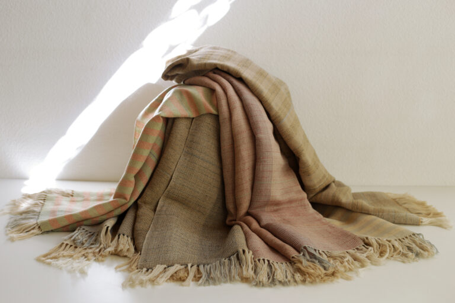
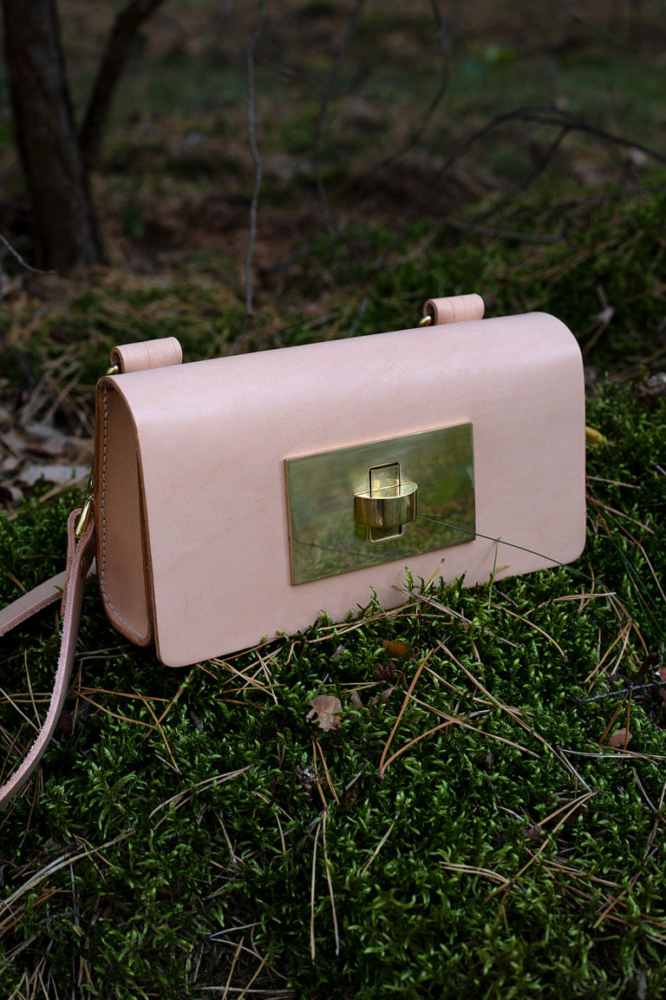
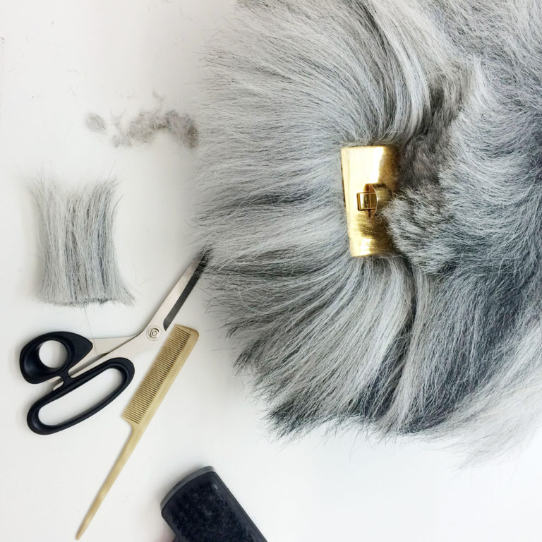
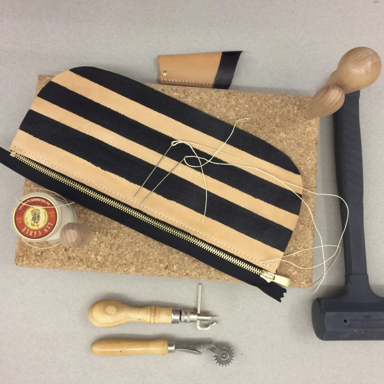

Journal

The Wedding 1
Editorial
The Wedding 2
Editorial
Mittsummer
Story
Grey Friend & The Hunter
Collection Story
A conversation with Anna Wendt, film producer
Conversations
The shepherd of Zimmern ob Rottweil
Craftsmanship
The Remnant Project
Sustainability
Nordenholz x Klessmann
Collaboration
Choose nature
Philosophy
Grey Friends – making of
Behind the Scenes